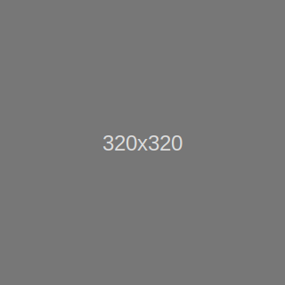

Language
Utility classes for setting CSS position property (see CSS reference for detail). There is no responsive class.
.position-(static|relative|absolute|fixed|sticky)
Options for fixing an element on top or bottom, and displaying on topmost with setting Z-index . These are typically used for navigation bars . See navbar demos bellow for detail.
Summary
Set .sr-only to a element for screen reader users
Screen reader users can read it as screen-reader only information
It is hidden for visual users
Set .sr-only-focusable for screen reader users who use keyboards
Example
An example using .sr-only-focusable .
a.sr-only.sr-only-focusable
Atrtribute href="#"
Text Skip to main content
Working example: set inside the bracket next ⇒ ( Skip to main content ) .
Screen reader users can read information and also get keybored focus.
Visible users neither see it nor get keyboard focus.
Only tabstop is available. It displays by focusing with Tab keys.
.shadow(-none|-sm|-lg)?
Examples
div.shadow-none
No shadow
div.shadow-sm
Small shadow
div.shadow
Regular shadow
div.shadow-lg
Larger shadow
Utility classes for setting width and height.
Width (25% step + auto) .w-(25|50|75|100|auto)
Height (25% step + auto) .h-(25|50|75|100|auto)
Max-width to 100% .mw-100
Max-height to 100% .mh-100
Width example
.w-25
.w-50
.w-75
.w-100
.w-auto
Height example (in the parent with height:100px;)
.h-25
.h-50
.h-75
.h-100
.h-auto
Max-width example: img.mw-100 (fits to the parent width)
Max-height example: img.mh-100 in the parent with height:200px; (fits to the parent height)

Min-width 100% to the viewport .min-vw-100
Min-height 100% to the viewport .min-vh-100
Width 100% to the viewport .vw-100
Height 100% to the viewport .vh-100
Examples
Min-width 100vw div.min-vw-100
Height 100vw div.vh-100
Height 100vh
Utility for setting margins and paddings.
.(m|p)(t|b|l|r|x|y)?-(0|1|2|3|4|5|n1|n2|n3|n4|n5|auto)
(m|p) margin/padding
m sets margin
p sets padding
(t|b|l|r|x|y) direction
t sets top margin/padding
b sets bottom margin/padding
l sets left margin/padding
r sets right margin/padding
x sets left+right margin/padding
y sets top+bottom margin/padding
(none) sets all four directions
(0|1|2|3|4|5|n1|n2|n3|n4|n5|auto) width
0 sets to zero1 sets to 1/4rem
2 sets to 1/2rem
3 sets to 1rem
4 sets to 1.5rem
5 sets to 3rem
n1 (margin only) sets to -1/4rem
n2 (margin only) sets to -1/2rem
n3 (margin only) sets to -1rem
n4 (margin only) sets to -1.5rem
n5 (margin only) sets to -3rem
auto (margin only) uses browser default
Advanced (Sass required): Width options can be changed by customizing Bootstrap (see
Customizing from Sass source code for datail). Width is scaled by the Sass variable
$spacer and its (default) value is
1rem (in source
_variables.scss ). Size options
0,1,2... are also specified by the map variable
$spacers .
Example
Setting paddings to table cell td (pb-(0|1|2|3|4|5) (Bottom only) is omitted by no effect)
.p-(0|1|2|3|4|5) (All)
.p-0
.p-1
.p-2
.p-3
.p-4
.p-5
.px-(0|1|2|3|4|5) (Left+Right)
.px-0
.px-1
.px-2
.px-3
.px-4
.px-5
.py-(0|1|2|3|4|5) (Top+Bottom)
.py-0
.py-1
.py-2
.py-3
.py-4
.py-5
.pt-(0|1|2|3|4|5) (Top)
.pt-0
.pt-1
.pt-2
.pt-3
.pt-4
.pt-5
.pl-(0|1|2|3|4|5) (Left)
.pl-0
.pl-1
.pl-2
.pl-3
.pl-4
.pl-5
.pr-(0|1|2|3|4|5) (Right)
.pr-0
.pr-1
.pr-2
.pr-3
.pr-4
.pr-5
Use .mx-auto for horizontal centering of a fixed width element.
div.mx-auto + style="width: 20rem;"
Negative margins are typically used for adjusting grid column gutters (see Gutters ). The example below demonstrates responsive gutter adjustment as follows.
Grows gutters to 3rem on width ≥ 768px (md or wider)
Shrinks gutters to default (15px) on width < 768px (sm or narrower)
Frame (to indicate the container width) div Attributes
Border .border
Vertical padding .py-2
Grid row div.row Attributes
Negative margin (3rem) on width ≥ 768px .mx-md-n5
Grid column (×2) div.col Attributes
Vertical padding (1rem) .py-3
Horizontal padding (3rem on width ≥ 768px) .px-md-5
Border .border
Background (white) .bg-white
Inner div Attributes
Background (light gray) .bg-light
Text Custom column padding
Home Utilities(4): Position/Screenreaders/Shadows/Sizing/Spacing